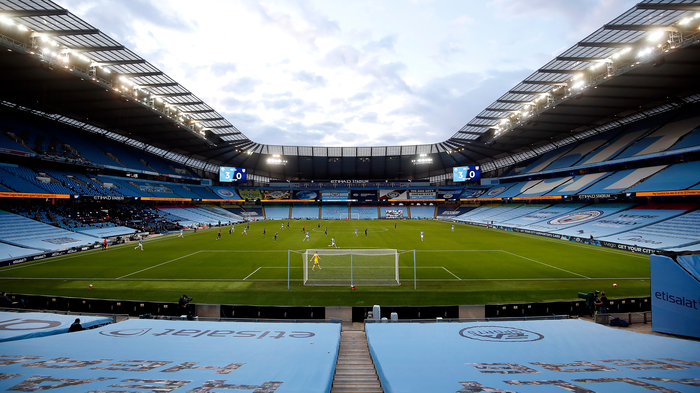
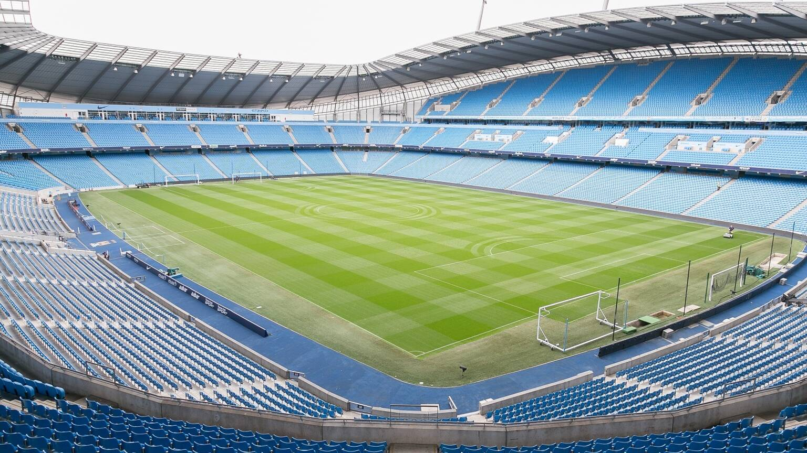
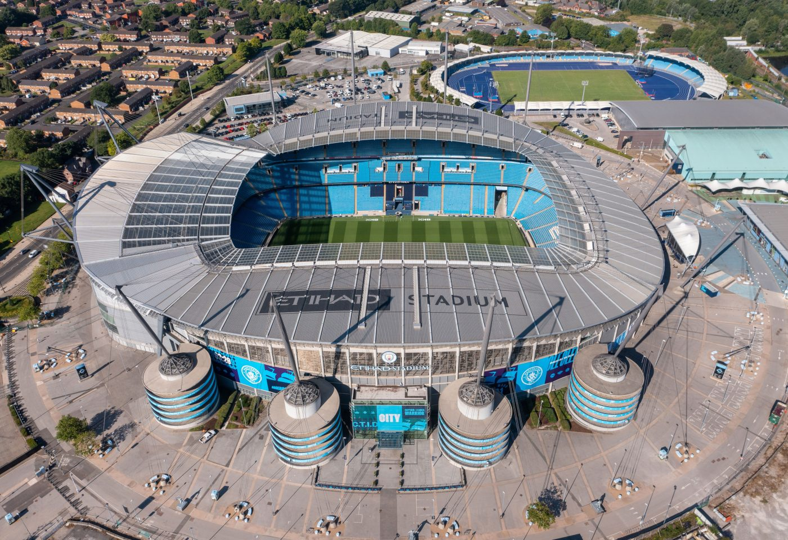
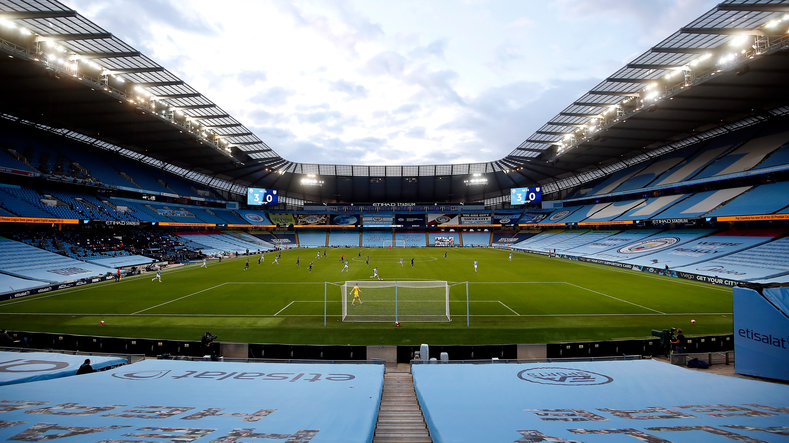
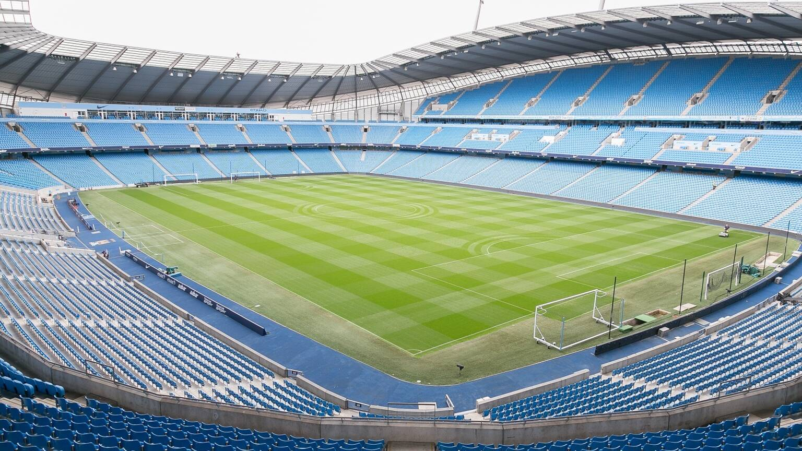
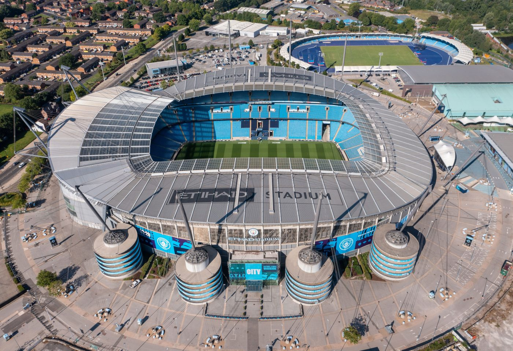

The City of Manchester Stadium in east Manchester, known as the Etihad Stadium since 2011 for sponsorship reasons, is on a 200-year lease from Manchester City Council to Manchester City. It has been the club's home since the end of the 2002–03 season, when City moved from Maine Road.
Before moving to the stadium, the club spent in excess of £30 million to convert it to football use: the pitch was lowered, adding another tier of seating around it, and a new North Stand was constructed. The inaugural match at the new stadium was a 2–1 win over Barcelona in a friendly match. A 7,000-seat third tier on the South Stand was completed in time for the start of the 2015–16 football season, increasing the stadium's capacity to 55,097. A North Stand third tier is in development, potentially increasing capacity to around 61,000.
 




